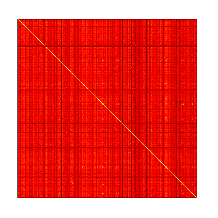

Understanding the Impact of Token Redundancy in Language Models
31 May 2021
TL;DR
Subword tokenization models, such as SentencePiece and Byte-Pair Encoding (BPE),
treat words and subwords differently, which can lead to redundancy and
inefficiency in language models. This blog explores the phenomenon of token
duplication caused by the absence of prefixed spaces in certain tokens. It
examines the implications of this issue and presents solutions to mitigate the
problems associated with duplicated tokens. Additionally, the blog highlights
the models' ability to learn and treat these tokens similarly through the
analysis of cosine similarity heatmaps of embedding vectors.
Introduction
Subword tokenization models, such as SentencePiece and Byte-Pair Encoding (BPE),
handle words and subwords differently. In this section, we will explore this
distinction using the GPT2Tokenizer as an example. The GPT2Tokenizer is a BPE
tokenizer commonly used in various pre-trained language models like GPT-2,
GPT-3, RoBERTa, BART, and others.
BPE models learn vocabulary by progressively merging the most frequently
occurring character or token pairs. This iterative process gradually constructs
a subword-level vocabulary capable of handling Out-of-Vocabulary (OOV) words and
rare terms in Natural Language Processing (NLP) tasks. Unlike other tokenization
approaches, BPE models operate directly on bytes, without any text preprocessing
prior to vocabulary learning.
Both BPE and SentencePiece models reserve tokens to represent the space
character. However, it's worth noting that the space character is also
encoded in nearly 50% of the tokens. When a token is prefixed with a space, it
signifies that the token represents a complete word rather than a subword.
Typically, a special character is used to represent the prefixed space. For
instance, GPT2Tokenizer uses Ġ, while sentencepiece tokenizers
employ a metaspace character ▁.
Let's illustrate this with an example using the GPT2Tokenizer:
>>> gpttokenizer('Hello World')
['Hello', 'ĠWorld'] - [15496, 2159]
In this case, ĠWorld is a complete-word token, whereas
Hello is not considered a complete-word token since it lacks a
prefixed space. This distinction lies at the root of the problem, as it leads
the BPE model to learn different tokens for the same word.
Take a look at the following examples:
>>> gpttokenizer('Hello World')
['Hello', 'ĠWorld'] - [15496, 2159]
>>> gpttokenizer(' Hello World')
['ĠHello', 'ĠWorld'] - [18435, 2159]
Here, we can observe that the same sentence is tokenized differently based solely
on the presence or absence of a space as a prefix. When constructing the
vocabulary of the BPE model, words that appear at the start of a line (not
prefixed with a space) are added to the vocabulary. Consequently, if the same
word appears elsewhere within the line, it is added to the vocabulary with a
space prefix.
Upon analyzing the GPT2Tokenizer, we can identify a category of approximately
8,535 words that exhibit this behavior. Here are a few examples:
sharing, Ġsharing
mask, Ġmask
said, Ġsaid
20, Ġ20
hold, Ġhold
podcast, Ġpodcast
It's important to note that these examples demonstrate that approximately 20%
of the vocabulary of the GPT2Tokenizer consists of unnecessary and redundant
tokens.
So, what kind of problems does this redundancy create?
Consider the following tokenization examples using both the GPT2Tokenizer and
another tokenizer called "bloomtokenizer":
>>> gpttokenizer("Ali is a student, Ali is a father")
[37893, 318, 257, 3710, 11, 12104, 318, 257, 2988]
>>> bloomtokenizer("Ali is a student, Ali is a father")
[86256, 632, 267, 30832, 15, 25427, 632, 267, 27782]
In the GPT2Tokenizer output, the first occurrence of Ali is encoded
as 37893, while the second occurrence is encoded as
12104. This presents two key problems. First, the model needs to
learn that these different tokens represent the same entity, resulting in
additional computational overhead. Second, we end up practically storing two
separate vectors to represent the same word, which leads to unnecessary memory
consumption.
This redundancy not only hampers the model's efficiency but also wastes
computational resources and memory. In an ideal scenario, the model should only
need to learn and store a single representation for each unique word, rather
than duplicating tokens for the same word with slight variations.
How do the models treat this
phenomenon?
Models seems to learn to handle these tokens in a similar manner. To illustrate
this, let's examine the cosine similarity of embedding vectors for such
tokens.

Heatmaps of cosine similarity between embedding vectors of 5 and 1,000 tokens
(respectively) from the GPT2Tokenizer vocabulary. The tokens are picked and
sorted randomly.
The heatmap demonstrate that the models learn to cluster these tokens together,
indicating their similarity despite slight variations in representation. This
can be attributed to the fact that the models are trained on a large amount of
data and are able to learn the similarity between these tokens.
This fact can be taken advantage of to reduce the vocabulary size of the model,
or to reduce the memory footprint of the model by merging these tokens together,
but this is not the topic of this article.
What is the solution?
The most effective solution to address this issue is to add a prefix space before
tokenizing each line. This approach is already implemented in most tokenizers.
Newer tokenizers often include an add_prefix_space=True option in
the huggingface/tokenizers
library, where a space is added to the beginning of the string before
tokenization.
However, this solution doesn't completely resolve the problem for multiline
tokenizers. Let's consider the example of the LLaMA tokenizer:
>>> llamatokenizer("John John\nJohn")
['▁John', '▁John', '<0x0A>', 'John'] - [1, 2259, 2259, 13, 11639]
Here, we can see that the LLaMA tokenizer applies the
add_prefix_space option, and the first occurrences of
John correspond to the same token ID: 2259. However,
the subsequent John following the line break (\n) is
still considered a different token with ID: 11639.
To address this issue in multiline tokenizers, an additional normalization step
can be applied. Along with add_prefix_space=True, a
Replace("\n", "\n ") rule can be employed
before tokenization. This rule adds a space after each line break, ensuring
consistent tokenization. Similarly, a denormalization step with the
Replace("\n ", "\n") rule can be used to revert
the normalization during decoding or post-processing.
Conclusion
Token duplication due to the absence of prefixed spaces in subword tokenization
can pose challenges in language models. Approximately 20% of the vocabulary in
tokenizers like GPT2Tokenizer is unnecessarily repeated, leading to wasted
computational resources and memory. However, models are capable of learning to
treat these tokens similarly, as demonstrated by cosine similarity heatmaps. The
most effective solution to address this issue is to adopt a prefix space before
tokenization, which is already applied in most tokenizers. For multiline
tokenizers, an additional normalization step involving the insertion of spaces
after line breaks can ensure consistent tokenization. By implementing these
solutions, we can improve the efficiency and effectiveness of language models
while reducing redundancy in token representations.
|
{kind=link}
{kind=link}